阅读建议
这一页整理为更适合连续阅读的攻略版本。对应章节源文件：zelda-tp-ch4.html 生成。文中配套图片会通过站内本地路径提供，便于稳定阅读。
你可以通过侧边栏保持章节顺序，也可以随时切换中英文版本，对照阅读同一页面。
第 4 章
随后，林克和米德娜来到精灵之泉，最后一位光之精灵拉内鲁被解放了，但是就在这时魔法师赞特出现，并嘲笑林克和米德娜所做的一切都是没有意义的。随后其将米德娜打伤并把一块水晶碎片插入林克头部，让林克无法变回人形。

这一页整理为更适合连续阅读的攻略版本。对应章节源文件：zelda-tp-ch4.html 生成。文中配套图片会通过站内本地路径提供，便于稳定阅读。
你可以通过侧边栏保持章节顺序，也可以随时切换中英文版本，对照阅读同一页面。
随后，林克和米德娜来到精灵之泉，最后一位光之精灵拉内鲁被解放了，但是就在这时魔法师赞特出现，并嘲笑林克和米德娜所做的一切都是没有意义的。随后其将米德娜打伤并把一块水晶碎片插入林克头部，让林克无法变回人形。
米德娜被魔法师赞特打伤
时间越来越少了，看着米德娜的身体慢慢的由黑色变成了灰色。林克不顾一切的冲入了王城城下町中，在人们惊恐的目光中，主角心中只有一个信念就是要找到塞尔达公主。因为王城守卫森严，林克完全无法进入王城，和动物说话后，得知特尔玛的酒馆有一只知道办法的猫。为了救米德娜，林克将她带到特尔玛的酒馆寻求帮助，却被酒保赶了出来。无助的林克准备带着受伤的米德娜离开时，特尔玛的猫出现并决定帮忙，它告诉林克，酒馆后面有条密道可以通向海拉尔城堡，并把窗户打开让林克从上面过去。进到酒馆后，可以利用阁楼之间连接的绳子移动，一直走到最里面的洞钻进去，来到了一间密室。林克通过开感知战胜房间角落的灵魂妖怪并取得它身上的魂魄，再去和房间北面的乔瓦尼说话，他会为林克打开通往城堡下水道的洞（当身上的鬼魂数到达一定数字的时候可以来这里换取东西，以后回来可以从城下町的东南的门外很多猫的地方变狼挖进来）。
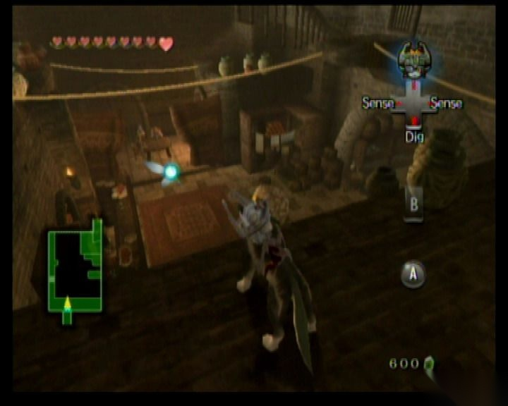
林克通过开感知发现房间角落的灵魂妖怪
林克来到下水道，捡起地上的木棍并在旁边的灯上引燃火可以烧掉挡路的蜘蛛网，随后进入之前被关押的监狱，林克跳入水中向左边游，向后来到螺旋楼梯处，虽然没有米德娜的帮助，林克还是可以利用楼梯间的绳索上到顶部。在顶部，没有了米德娜，林克只好借助风的力量才能通过一些地方，还记得第一次见到塞尔达公主的地方吗，赶紧到那里请求公主的帮助吧。
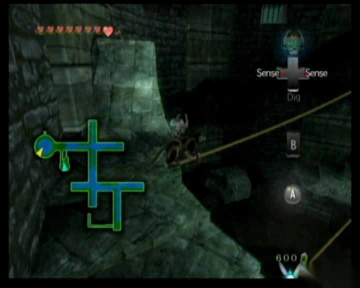
没有米德娜的帮助，林克需要利用楼梯间的绳索上到顶部
公主看出林克被恶魔力量封印而不能变回人型，她告诉林克要解除封印，必须得去法隆森林找到圣剑才可以，不过那里的具体情况公主也不清楚，为了拯救米德娜，公主将自己的力量传给米德娜，难过的林克也无能为力，只有消灭黑暗源头才能拯救世界。
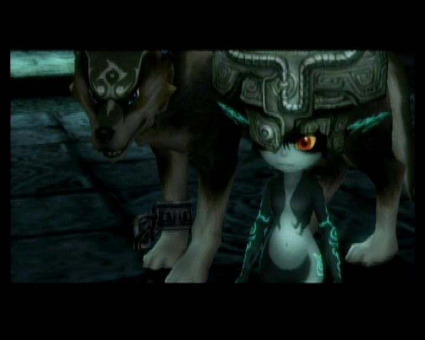
公主将自己的力量传给米德娜
恢复活力的米德娜带着林克传送回到了北法隆森林，刚一到这里就看到一只被攻击的猴子，救下她后朝右边走，米德娜的传送会帮助林克进入神圣之森，这里又有一个嚎叫之岩，用过后会在海拉尔城南面找到他。
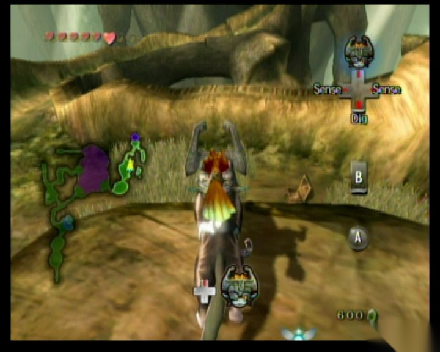
恢复活力的米德娜带着林克进入神圣之森
进入到神圣之森，这里的地形比较具有迷惑性，在入口处能发现一块印有 Triforce（黄金三角力量）的石碑，按提示哼出正确的旋律，一个提灯吹喇叭的小妖怪（Skull Kid）出现，林克一直追着，他会不断打开新的道路。不过每次被攻击后其都会跑掉并躲起来，林克借助地上的灯光，可以帮助确定他逃向哪个房间，到最后无路可逃，小妖怪会在一个象斗技场一样的地方和林克决战，林克只有在其吹喇叭的时候才能打到他，否则他会不停瞬移，战而胜之后其再次逃跑，林克穿过这里，一路来到有两个雕塑的空地。
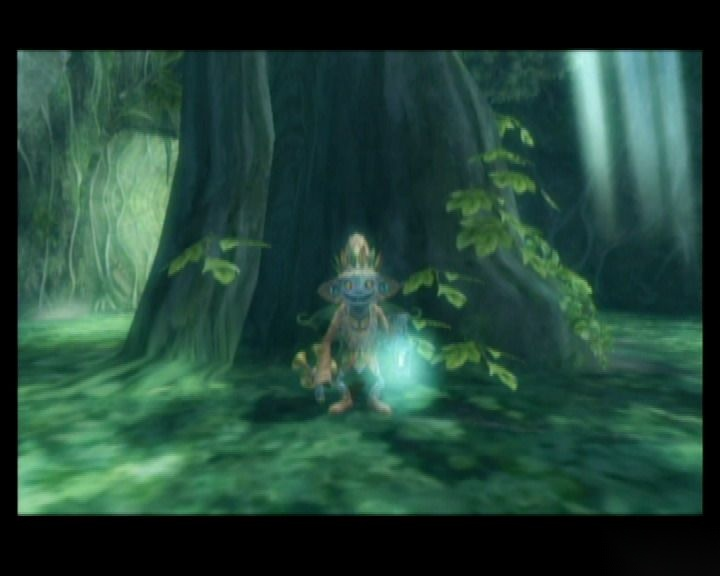
提灯吹喇叭的小妖怪（Skull Kid）
林克正准备进入北面的门时，雕塑被激活了，他们会根据林克的移动方向移动，只要将他们移到两个发光的地板处就可以打开门，随后取得征服者之剑（Master Sword）并解开封印，以后的林克就可以随时在狼和人形态之间切换了。具体的走法是：左下右右上左上上左下下右上，或者：右下上上上左左下下下右上。之后所有开通的门都会关闭，森之圣域还无法自由活动，到游戏后期再回来吧。
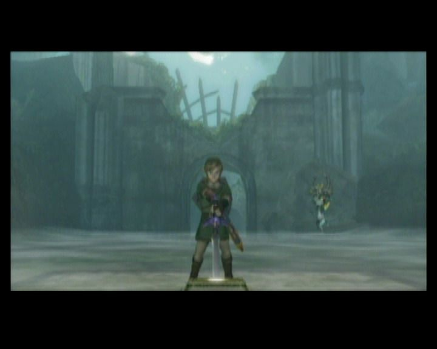
取得征服者之剑（Master Sword）
林克回到之前的斗技场，炸开中央的岩石并利用感知能发现地洞，挖下去后可以取得 心之碎片 42 和一个魂魄。随后让米德娜帮助传送回海拉尔城。
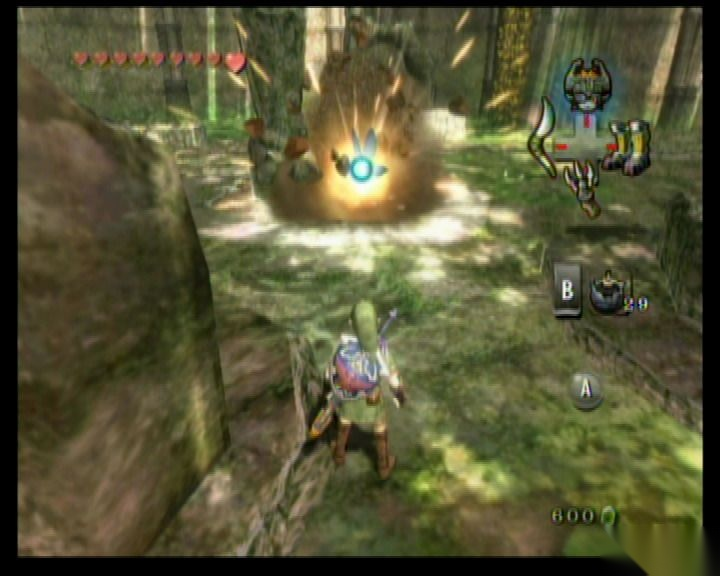
炸开斗技场中央的岩石，就可以利用感知发现地洞
来到特尔玛的酒馆，和特尔玛谈话了解到了角落的几个人也正在调查海拉尔王国的异常现象，并且其中一个叫奥鲁（Auru）的人去了海利亚湖，和他们三人对话然后调查桌子上的地图后可以得知奥鲁的具体位置。林克随后可以先去城南外面找到金狼，和不死勇士战斗后学会新技能暴烈劈（Helm Splitter），然后再让米德娜帮忙传送去海利亚湖。
林克根据得到的标志到地图右下角的哨塔找到奥鲁并获得奥鲁的信物（Auru's memo），之后再来到湖中间的大炮处并将奥鲁的信物出示给他看，他会将林克发射到戈鲁多沙漠（Gerudo Desert）。
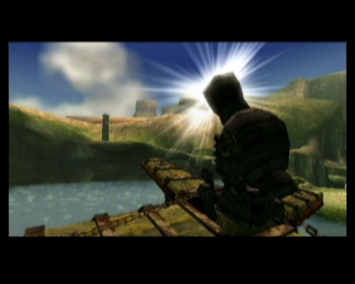
在湖中央“乘坐”奥鲁的大炮
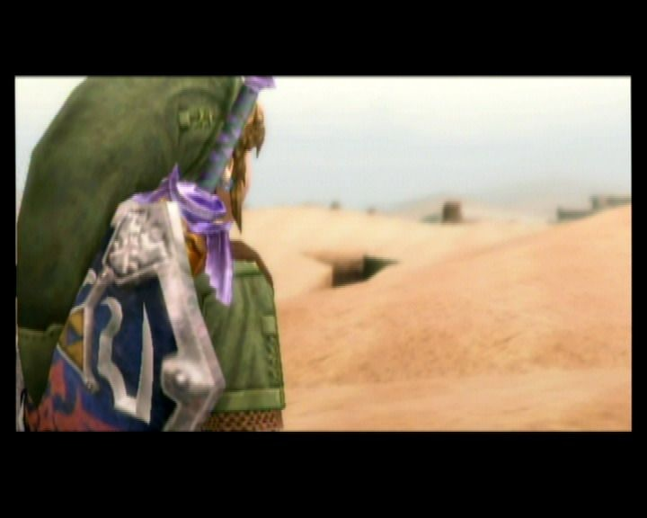
来到戈鲁多沙漠（Gerudo Desert）
林克一直朝地图右上跑可以见到营地，先干掉两个骑猪的兽人后，夺过他们的坐骑野猪，可以用其冲破前面的栅栏继续向北前进。
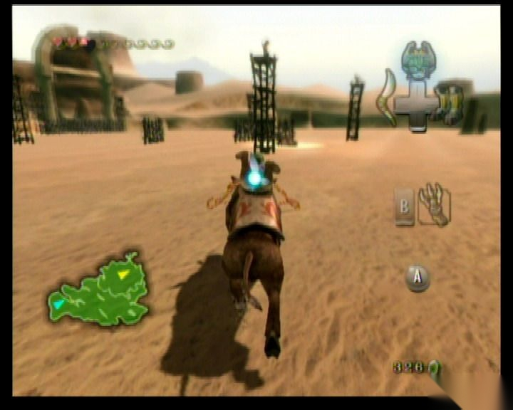
戈鲁多沙漠（Gerudo Desert）北方的营地
一路朝西北方向前进，林克在最里面干掉一个腰部闪闪发亮的兽人卫兵后掉落一把小钥匙，林克将广场上的烤猪打掉会掉落一片 心之碎片 18。随后回到路上的一个锁住的门，打开进入后和兽人头领布尔布林决斗（用背斩很容易就能解决掉），战胜后用猪冲破栅栏来到仲裁者之地（Arbiter's Grounds）。
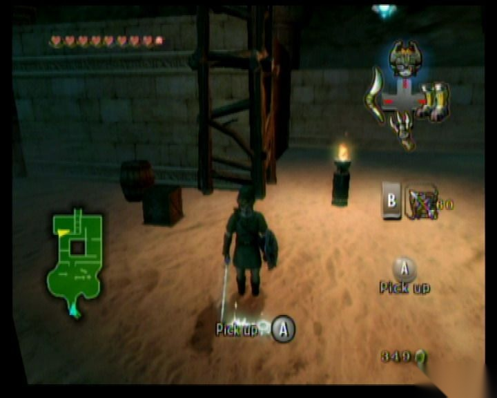
在仲裁者之地外围
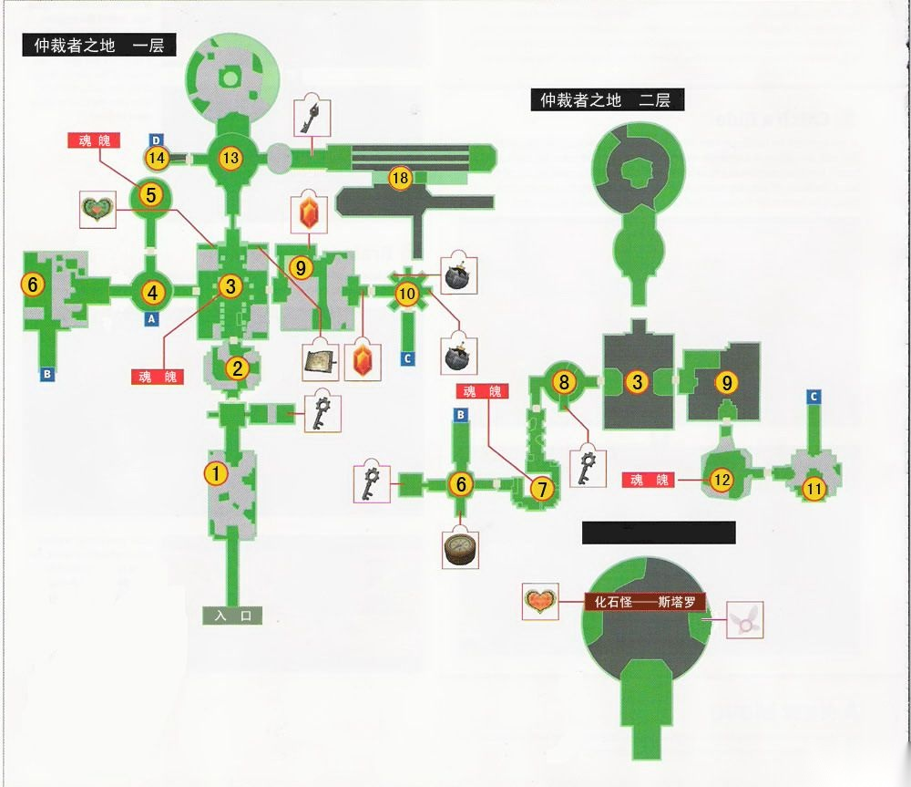
仲裁者之地（沙漠刑场迷宫）一层、二层地图
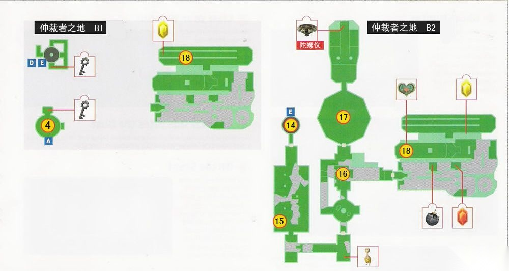
仲裁者之地（沙漠刑场迷宫）地下一层、二层地图
这里到处都是流沙，林克站在上面会不断下沉，所以要尽量快速通过，另外中间的旋涡状的流沙碰到就会直接沉下去。右边墙上有一个可以抓的地方，用飞爪抓过去，然后朝房间左边走，在房间左上角能看到开关，用飞爪抓过来可以打开北面的门，进去后来到房间 1。
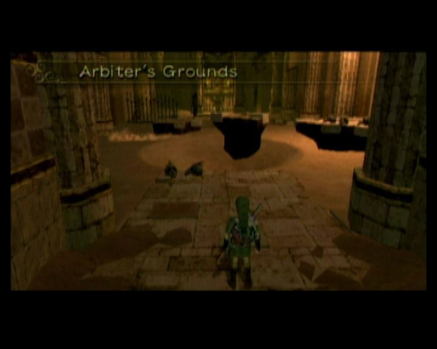
中间的旋涡状的流沙碰到就会直接沉下去
房间 1：房间 1 的右边有钥匙，注意地上的虫子，如果被太多虫子爬到身上会大大降低移动速度，可用旋风斩将它们扫开，房间左边的盆子里有灯油，把油灯装满，拿了钥匙之后去房间 2。
房间 2：房间很黑，而且有很多骷髅兵，注意不要在流沙里和它们纠缠太久，朝北走有道被拦住的门，将两边的灯点亮可以打开，前进去房间 4。
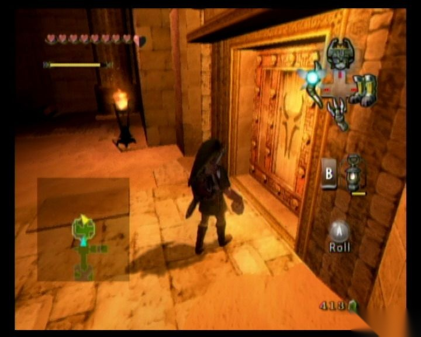
把门两边的油灯点亮便可打开门
房间 3：这里会出现 3 个灵魂灯怪并将北面四个灯的火取走使大门关上，于是接下来的任务就需要去取回四个灯火，先在这里解决第一个灯怪并得到他的一个魂魄，随后调查灯怪尸体可以获得灯怪的气味并在感知状态下追踪，根据气味找到房间西南角落的沙，挖开后能发现一个开关，拉开出现一个地道，在房间左上的箱子里有一块 心之碎片 19，而右上对应位置的箱子里有迷宫的地图，随后进入地道来到房间 4（B1）。
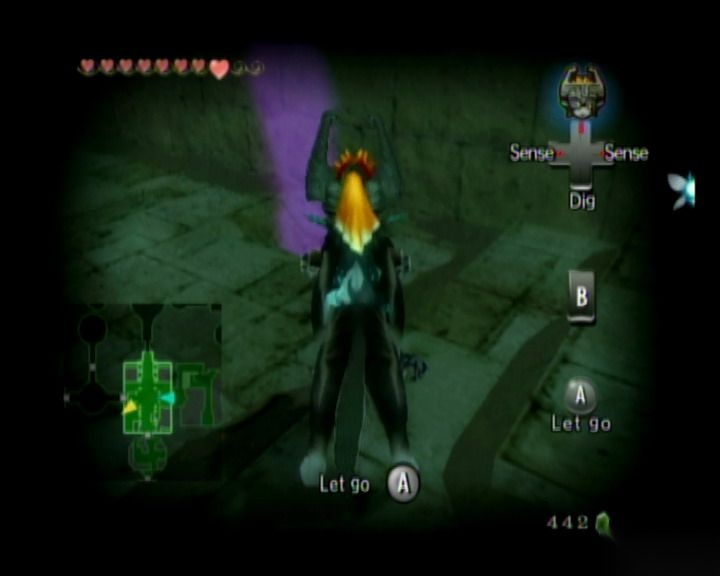
跟着灯怪气味寻找其他的灯怪
房间 4（B1）：这个房间中间有个可以转动的柱子，转动后能改变房间周围的墙壁，并在北面出现墙壁后的箱子，里面能得到小钥匙，拿到后站到本来是墙壁的地方向上看可以发现天花板上有个洞，用飞抓抓到楼上。进入房间 5 发现第二个灯怪，消灭他并得到其魂魄后回到房间 4（B1），将中间的柱子转回之前的位置，再回到房间 3，接着从房间 3 左边的门到房间 4（一层）。
房间 4（一层）：打开左边锁住的门，到房间 6。
房间 6：这个房间除了流沙还有隐藏在沙里的陷阱，利用狼的感知的话可以看到这些陷阱，朝右上前进翻到台上，可以看到一个箱子，将箱子拉出来后上到上面去，这里有一条铁链，拉出来以后前面不远处的吊灯会慢慢上升，拉的时候注意不要掉到下面和碰到右边的刺，升到最高处后会放开链条并迅速通过，否则灯会掉下来并砸到林克头上（建议变狼再拉，狼跑的速度比人快），然后朝南边走一直上楼。这里也有一个可以推动的柱子，将其向两边不同方向推动会在西边和南边都出现箱子，其中西边的箱子里面有把小钥匙而南边的箱子里面有指南针，接着去东边开门进入房间 7。
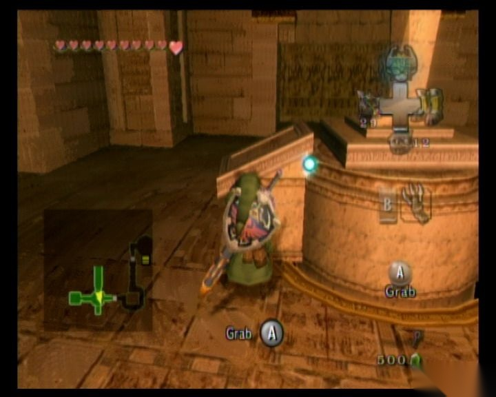
拉动铁链
房间 7：房间 7 有很多小骷髅和几个会恐吓的大骷髅，把他们全部干掉后打开感知，跟随气味可以发现一个和房间 3 中一样的机关，拉开后找到第 3 个灯怪，再朝北面走去房间 8。
房间 8：这里林克会突然发现移动速度下降，打开感知发现有许多老鼠幽灵爬在身上，把他们干掉后到南边的箱子里拿把小钥匙，再走东边的门回到房间 3 的上层，然后从吊灯上跳到对面来到房间 9。
房间 9：从左边的楼梯跳下去后把箱子推开，可以从箱子上爬上台子，这里又有一个拉吊灯的机关，这里拉起吊灯后到路的尽头能找到一个箱子，不过里边是钱。拉起吊灯后不要过去而站在吊灯最下面的凹陷处等吊灯落下后，可以爬上吊灯跳到对面到房间 10。
房间 10：进入房间后门会被关上，并出现一个打死后会复活的骷髅，等到米德娜提示后，再次把骷髅打倒，在其的尸体上放个炸弹将他炸碎（也可以直接用炸弹箭炸死他）后门会打开，房间周围的木条打碎后炸弹可以拿，之后再继续朝南进入房间 11。
房间 11：这里有两排灯柱，后面的一排有 5 盏，点燃最右边的一盏和前面的那盏后可以打开西面的门（点错的话会被小骷髅们围殴），然后进入房间 12。
房间 12：这里会遇到最后一个灯怪，他会分 4 个分身出来，因此这个时候是攻击不到他的，不过注意观察会发现等他要攻击的时候，有一个分身颜色会逐渐变深，这个就是其本体，攻击之，消灭后取得最后一个灯火，回到房间 3，这时北面的门会打开，进入来到房间 13。
房间 13：现在这个房间还不能有所作为，所以先去西面到房间 14
房间 14：这个房间里有一个巨大的可转动的柱子，通过左右转动能使最下面的盘子上升或者下降。先使其上升两层，就是按大地图显示在 B1 的时候，到周围的某间房间里可以找到一把小钥匙，然后再将转盘转到最底层，打开北面的门，来到房间 15。
房间 15：房间里有许多老鼠灵魂，另外还有许多陷阱，打开感知能一一发现，然后找没有陷阱的路一直朝南面走，在尽头处能找到一个链条，拉动后可将档在南边的门打开，放开链条机关会复位，所以要迅速通过并进入房间 16。
房间 16：这个房间内一共有 3 个会复活的骷髅，将他们全部消灭后可打开门，利用飞爪到南边的台子上能得到欧库，然后朝北面到房间 17。
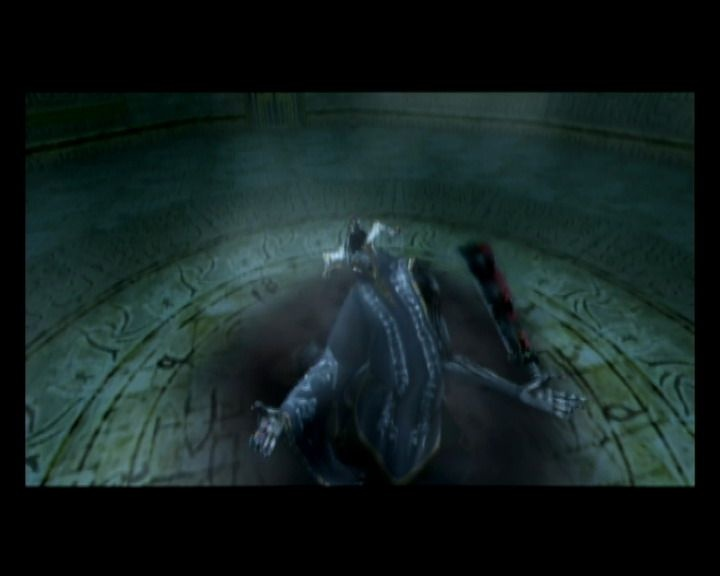
小 BOSS
房间 17：这里是小 BOSS 的房间，砍断中间捆剑的绳子后激活小 BOSS，先用狼开感知能发现 BOSS 的本体，攻击后他会现出原形，这个时候切换回人形态用弓箭攻击，之后 BOSS 会靠近林克，再用剑砍他，随后他又会进入幽灵形态，如此反复几次可战胜 BOSS，随后可到北面的房间取得陀螺仪（旋转齿轮，Spinner），利用陀螺仪能在周围墙壁上像轨道一样的地方行动，注意在轨道上前进的时候不能攻击防御和做其他动作，但是可以按 B 键弹离轨道。回到房间 16，利用陀螺仪可通过东面的流沙到房间 18。
房间 18：这个房间要充分利用陀螺仪的特性，先从正对面的轨道到 2 楼，在最左边的箱子处有 心之碎片 20，然后再用陀螺仪往回走，躲过中间的旋转机关后到两边都是轨道的地带，这里注意按 B 键左右跳来通过轨道上的断裂处，随后在轨道尽头会自己飞出来到一个封闭的小沙丘里，这里有另一条向上的轨道，用陀螺仪在上面移动来到 3 楼，有另一个双边轨道，上面有很多机关，注意左右跳跃躲避那些旋转机关后到门前面，进入后回到房间 13。
房间 13：这时是从房间右边的门回到房间，并取得大钥匙，回到房间正中，地上有一个和陀螺仪相吻合的凹槽，在上面用陀螺仪后可以将北面的墙壁移开并出现新的路，利用墙上轨道一直到顶端，破坏罐子可抓到一只精灵，跳到中间的高台上再用陀螺仪启动机关会升起另一段轨道，用陀螺仪上去一直通到最上部来到最终 BOSS 的房间。
BOSS 战：化石怪——斯塔罗德
进入房间后见到了赞特，他将正中的巨龙遗骸复活并让其与林克战斗，在周围有一条环行轨道，可在上面利用陀螺仪转到斯塔罗德的背后再跳离轨道，朝斯塔罗德的脊椎处撞去同时再按 B 键进行攻击可以将其椎骨打碎，3 次攻击后斯塔罗德就会倒下，但是他并没有被消灭，其头骨会再次复活和林克战斗，普通攻击对斯塔罗德的头骨是无效的，同样利用陀螺仪在中间巨柱上的轨道向上移动，其间斯塔罗德会吐火球攻击林克，这时要跳到另一边的轨道上躲避，最后到达和斯塔罗德水平相当的位置再次用陀螺仪弹出后进行攻击，斯塔罗德的头部会落地，这时再用剑砍其头顶的剑，如此几次以后则可将其彻底消灭。
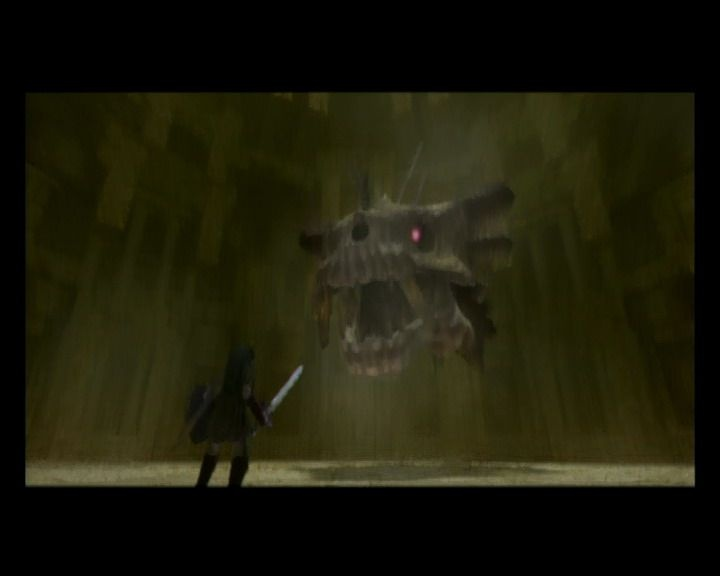
BOSS：化石怪——斯塔罗德
参考：
这套双语站保持稳定的阅读顺序，便于你按一致的节奏浏览 Twilight Princess 相关内容。
{kind=link}
{kind=link}
{kind=link}
{kind=link}
{kind=link}
{kind=link}
{kind=link}
{kind=link}
{kind=link}
{kind=link}
{kind=link}
{kind=link}
{kind=link}
{kind=link}
{kind=link}
{kind=link}
{kind=link}
{kind=link}
{kind=link}
{kind=link}
{kind=link}